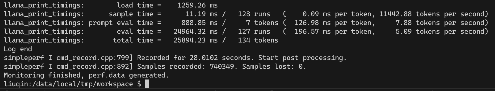
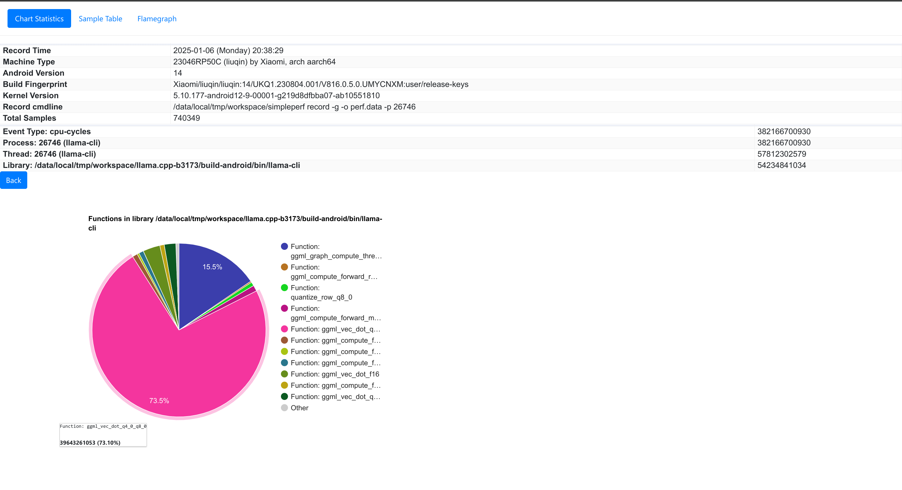

llama.cpp学习
介绍：
llama.cpp,版本是b3173,github地址:https://github.com/ggerganov/llama.cpp/releases?q=b3173&expanded=true 本文档记录将其部署在arm平台的实验代码和操作流程以供参考
部署说明：
- 使用adb直接连接设备,代码放在/data/local/tmp/workspace/llama.cpp-b3173
- android端的编译可以参考 官方文档,编译的ndk可以使用android studio下载后,在x86端编译arm的二进制文件,编译使用cmake.
下载代码
b3173： https://github.com/ggerganov/llama.cpp/releases?q=b3173&expanded=true
编译代码（安卓版本）：
1. 直接使用命令：
cmake \
-DCMAKE_TOOLCHAIN_FILE=
~/Android/Sdk/ndk/28.0.12674087/build/cmake/android.toolchain.cmake \
-DANDROID_ABI=arm64-v8a \
-DANDROID_PLATFORM=android-28 \
-DCMAKE_C_FLAGS="-march=armv8.7a" \
-DCMAKE_CXX_FLAGS="-march=armv8.7a" \
-DGGML_OPENMP=OFF \
-DGGML_LLAMAFILE=OFF \
-B build-android
${系统的ndk编译工具链地址}
2.使用vscode搭配CMakePreset.json
这里是CMakePresets.json的一个示例，编译后的文件在"binaryDir": "${sourceDir}/out/build/${presetName}"
{
"version": 4,
"configurePresets": [
{
"name": "NDK-cross-compile",
"displayName": "NDK",
"description": "make",
"binaryDir": "${sourceDir}/out/build/${presetName}",
"cacheVariables": {
"CMAKE_BUILD_TYPE": "Debug",
"CMAKE_TOOLCHAIN_FILE": "~/Android/Sdk/ndk/28.0.12674087/build/cmake/android.toolchain.cmake",
"CMAKE_INSTALL_PREFIX": "${sourceDir}/out/install/${presetName}",
"CMAKE_C_FLAGS": "-march=armv8.7a",
"CMAKE_CXX_FLAGS": "-march=armv8.7a",
"GGML_OPENMP": "OFF",
"GGML_LLAMAFILE": "OFF",
"ANDROID_ABI": "arm64-v8a",
"ANDROID_PLATFORM": "android-28"
}
}
]
}
运行交互：

使用
将编译后的文件传输到/data/local/tmp/ndk文件夹下评估性能：
编写监控脚本monitor.sh
#!/system/bin/sh
# monitor.sh
# 启动 llama-cli 并获取 PID
./llama.cpp-b3173/build-android/bin/llama-cli -m ./q4_0/ggml-model-Q4_0.gguf -p "what is the meaning of life" -n 128 &
PID=$!
# # 启动 simpleperf，监控 llama-cli 进程
# ./simpleperf stat -e cache-references,cache-references:u,cache-references:k \
# -e cache-misses,cache-misses:u,cache-misses:k,instructions \
# -p $PID &
./simpleperf record -g -o perf.data -p $PID & --dump
SIMPLEPERF_PID=$!
# 等待 llama-cli 进程结束
wait $PID
# 等待 simpleperf 结束（如果它还在运行）
wait $SIMPLEPERF_PID
# 在此时，llama-cli 和 simpleperf 都已经结束
echo "Monitoring finished, perf.data generated."
推送monitor.sh到设备
运行脚本：  拉取perf.data文件：
使用ndk下的simpleperf文件夹下的工具处理数据 例如我的simpleperf地址是：~/Android/Sdk/ndk/28.0.12674087/simpleperf 代码中也附加有mysimpleperf以供使用
simpleperf report 生成报告
分析生成report.txt
"simpleperf report -i /sdcard/perf.data -o /sdcard/report.txt"
"simpleperf report -g -i /sdcard/perf.data -o /sdcard/report_g.txt"
生成调用关系图
simpleperf report -g --symfs . >report
生成report.html
python report_html.py -i ./perf.data -o ./perf.html
生成火焰图(这里需要下载FlameGraph项目)
python ./simpleperf/report_sample.py > out.perf
./FlameGraph/stackcollapse-perf.pl out.perf > out.folded
./FlameGraph/flamegraph.pl out.folded > out.svg
report.html示意： 
火焰图：

使用lldb.server进行debug
设置登陆调试脚本(.vscode/launch.json)
{
"version": "0.2.0",
"configurations": [
{
"type": "lldb",
"request": "launch",
"name": "lldb launch",
"program": "/data/local/tmp/workspace/ndk/bin/llama-cli",
"args": [
"-m",
"/data/local/tmp/ggml-model-q4_0.gguf"
],
"preLaunchTask": "build task",
"initCommands": [
"platform select remote-android",
"platform connect connect://localhost:9090",
"settings set target.inherit-env false",
"platform settings -w /data/local/tmp/",
"platform status"
],
"env": {
"LD_LIBRARY_PATH": "/data/local/tmp/workspace/ndk/bin"
}
}
]
}
设置前置任务（tasks.json）
{
"version": "2.0.0",
"tasks": [
{
"label": "build task",
"type": "shell",
"command": "bash debug.sh"
}
]
}
具体的任务可以在debug.sh中调整
#!/bin/bash
# adb push /home/gyh/llama-test/llama.cpp-b3173/out/build/* /data/local/tmp/workspace/
adb forward tcp:9090 tcp:9090
# adb shell "cd /data/local/tmp && ./data/local/tmp/lldb-server platform --server --listen '*:9090'"
gnome-terminal -- bash -c "adb shell 'cd /data/local/tmp && ./lldb-server platform --listen *:9090 --server'"
之后可以在run and debug界面选择设置的登陆调试进行图形化调试

使用qemu在本地模拟运行
首先安装qemu,官方有一个教程
修改cmakepresets.json如下
{
"name": "ndk",
"displayName": "NDK",
"description": "使用NDK工具链交叉编译",
"binaryDir": "${sourceDir}/out/build/${presetName}",
"cacheVariables": {
"CMAKE_BUILD_TYPE": "Debug",
"CMAKE_TOOLCHAIN_FILE": "~/Android/Sdk/ndk/29.0.13113456/build/cmake/android.toolchain.cmake",
"CMAKE_INSTALL_PREFIX": "${sourceDir}/out/install/${presetName}",
"CMAKE_C_FLAGS": "-march=armv8.7a+sve+sve2 -g -static",
"CMAKE_CXX_FLAGS": "-march=armv8.7a+sve+sve2 -g -static",
"GGML_OPENMP":"OFF",
"GGML_LLAMAFILE":"OFF",
"BUILD_SHARED_LIBS":"OFF",
"ANDROID_ABI": "arm64-v8a",
"ANDROID_PLATFORM": "android-35"
}
}
用户模式运行llama-cli的命令
可以使用相同的格式运行其他二进制文件。